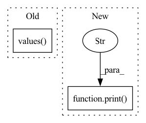

Pattern ID :41779

Before Change
//Check the n-gram and reset the weights accordingly
// https://machinelearningmastery.com/calculate-bleu-score-for-text-python/
overlaps = sum(overlap.values())
if overlaps == 1:
return bleu.sentence_bleu(desired, actual, weights = (1, 0, 0, 0), smoothing_function=SmoothingFunction().method4)
if overlaps == 2:
After Change
//Check the n-gram and reset the weights accordingly
// https://machinelearningmastery.com/calculate-bleu-score-for-text-python/
print("overlap ", overlaps)
if overlaps == 1:
return bleu.sentence_bleu(desired, actual, weights = (1, 0, 0, 0), smoothing_function=SmoothingFunction().method4)
//return score
elif overlaps == 2:
In pattern: SUPERPATTERN
Frequency: 3
Non-data size: 2
Instances
Fragment ID: 117088862
Project Name: jina-ai/jina-hub
Commit Name: 810da0805d644301a38858a23c5d18879c01d8c2
Time: 2020-11-03
Author: zuxi.w13@gmail.com
File Name: evaluators/text/BleuEvaluator/__init__.py
M Class Name: BleuEvaluator
N Class Name: BleuEvaluator
M Method Name: get_nltk_bleu_score(3)
N Method Name: get_nltk_bleu_score(3)
M Parent Class: BaseTextEvaluator
N Parent Class: BaseTextEvaluator
M File Name: evaluators/text/BleuEvaluator/__init__.py
N File Name: evaluators/text/BleuEvaluator/__init__.py
M Start Line: 41
M End Line: 54
N Start Line: 41
N End Line: 49
'>
Before Change
tracer = NodePathTracer()
tracer.trace(model)
pprint(list(tracer.node_to_qualname.values()))
def get_intermediate_nodes(model: nn.Module, return_nodes: Dict[str, str]) -> nn.Module:
After Change
print("Nodes from train mode:")
pprint(list(train_tracer.node_to_qualname.values()))
print()
print("Nodes from eval mode:")
pprint(list(eval_tracer.node_to_qualname.values()))
print()
_warn_graph_differences(train_tracer, eval_tracer)
'>
Fragment ID: 117088863
Project Name: feng-lab/pytorch-image-models
Commit Name: 02c3a75a45deea8b8728da14e0d0b5106e06d98b
Time: 2021-11-12
Author: alexander.soare159@gmail.com
File Name: timm/models/fx_features.py
M Class Name: AnonimousClass
N Class Name: AnonimousClass
M Method Name: print_graph_node_qualified_names(2)
N Method Name: print_graph_node_qualified_names(1)
M Parent Class:
N Parent Class:
M File Name: timm/models/fx_features.py
N File Name: timm/models/fx_features.py
M Start Line: 161
M End Line: 173
N Start Line: 218
N End Line: 254
'>
Before Change
)
executor = Executor(mask_func)
iterator = iter(
list(input_files_dict.values())
)
if __name__=="__main__":
After Change
cfg,
futures=output_list
)
print(f"Dataset saved at {csv_file}")
return csv_file
if __name__=="__main__":
build_masks()
'>
Fragment ID: 117088861
Project Name: dsgoficial/pytorch_segmentation_models_trainer
Commit Name: d93d7abea680aad51d8b9aaf83086ae1ecf719bf
Time: 2021-05-06
Author: philipeborba@gmail.com
File Name: pytorch_segmentation_models_trainer/build_mask.py
M Class Name: AnonimousClass
N Class Name: AnonimousClass
M Method Name: build_masks(1)
N Method Name: build_masks(1)
M Parent Class:
N Parent Class:
M File Name: pytorch_segmentation_models_trainer/build_mask.py
N File Name: pytorch_segmentation_models_trainer/build_mask.py
M Start Line: 77
M End Line: 77
N Start Line: 79
N End Line: 89